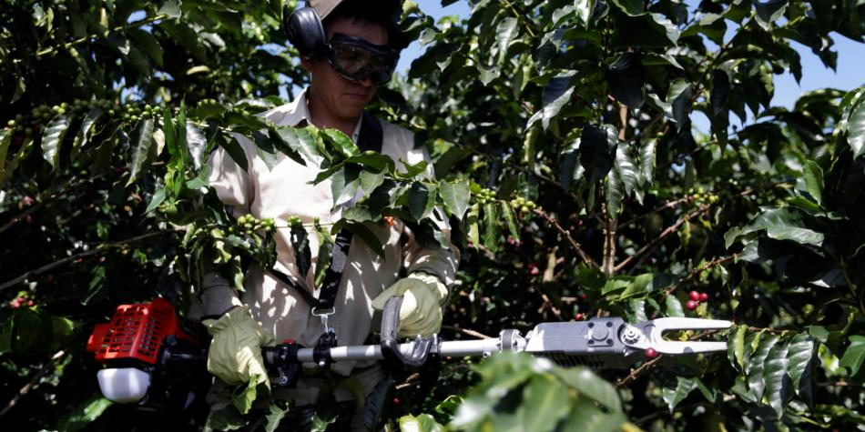
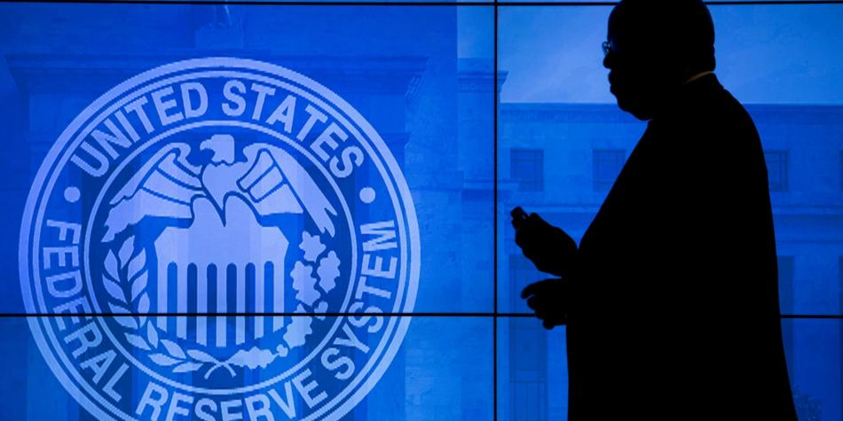
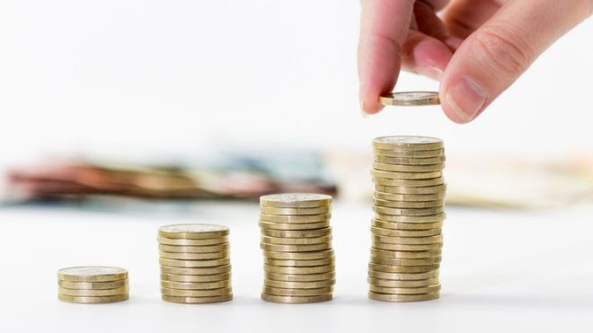

Desde hace 6 años, empresas no estaban tan motivadas para invertir
En medio del repunte esperado en la economía, que este año podría crecer 3,6 por ciento, las perspectivas de inversión del sector empresarial del país son igualmente positivas.
Así lo indican anuncios de compañías, resultados financieros y noticias tras las asambleas anuales ordinarias de accionistas.
El año pasado, el crecimiento del PIB fue de 2,7 por ciento. Si bien fue el mayor ritmo en tres años, las compañías fueron muy prudentes y muchas redujeron las apuestas de inversión.
Por ejemplo, el reporte revelado el jueves por la empresa Colombina dice que solo destinó 66.000 millones de pesos, cifra que se convierte en su inversión de capital más baja de los últimos 5 años.
Por el contrario, este año millonarias capitalizaciones y el envío de utilidades a las reservas para futuras expansiones están entre los mecanismos que usarán las compañías no financieras para crecer.
La encuesta de la Asociación Nacional de Empresarios de Colombia (Andi) indica que el 51,4 por ciento de las firmas desarrollará proyectos de inversión, frente a un 42 por ciento que decidió no hacerlo y un 6,6 por ciento que los aplazará. Además, el porcentaje de respuestas afirmativas fue el mayor obtenido desde el 2012 (52,5 por ciento), lo cual refleja, según dijo el gremio, una mejoría y mayor confianza en el mercado con respecto a los últimos años.
El presidente del gremio, Bruce Mac Master, dijo que las importaciones de bienes de capital presentan un comportamiento acorde con un mayor nivel de inversión, y vienen registrando un desempeño positivo, lo que se convierte en otra buena señal para la inversión.
En efecto, según el Dane, en enero las adquisiciones en el exterior de bienes de capital y materiales de construcción sumaron 1.305 millones de dólares, con un crecimiento de 10,1 por ciento frente a igual mes del 2018.
Por su lado, Empresas Públicas de Medellín (EPM) tendrá un presupuesto de inversión de 3,2 billones de pesos para obras de infraestructura de agua potable, aguas residuales, generación, distribución y transmisión de energía.
No obstante, el esfuerzo de inversión más grande corre por cuenta del Grupo Ecopetrol, que planea invertir mínimo 3.500 millones de dólares, lo que representaría un aumento de 19,9 por ciento, frente a 2018, cuando fue de 2.917 millones de dólares. De ese monto, el 92 por ciento se destinará a las operaciones (entre 3.220 millones de dólares y 3.680 millones de dólares) en Colombia, particularmente enfocado en el crecimiento de su segmento de exploración y producción, al cual se destinará el 81 por ciento del total de los recursos.
Entre tanto, el presidente de ISA, Bernardo Vargas Gibsone, dijo que apuntan hacia nuevos países y fortalecer la operación en transmisión de energía, infraestructura vial, telecomunicaciones y gestión de sistemas en tiempo real. Para el periodo 2019-2023, la compañía proyecta inversiones de 10,5 billones de pesos.

Cafeteros recibirán $ 155.500 millones para aliviar crisis de precios
EL Gobierno colombiano desembolsará 155.500 millones de pesos (unos 50,5 millones de dólares) para dinamizar el sector cafetero del país, que vive una aguda crisis desde el año pasado por los precios internacionales del grano, informó este jueves la Federación Nacional de Cafeteros (FNC).
Precio del café suave colombiano, en niveles mínimos de hace 14 años
Superávit tumba precio del café arábiga al menor nivel en 13 años
Precio interno de carga de café nada que levanta cabeza
El precio interno base de compra ha descendido en promedio un 16 % durante el primer trimestre de este año
El gremio detalló en un comunicado que a un primer apoyo de 95.500 millones de pesos (unos 31 millones de dólares) se sumó una nueva partida por 60.000 millones de pesos (unos 19,5 millones de dólares).
Según la información, el anuncio lo hizo el presidente Iván Duque al gerente de la FNC, Roberto Vélez Vallejo, "como resultado de las gestiones de la institucionalidad cafetera" para buscar soluciones a la caída internacional del precio del grano. Asimismo, Duque expresó su apoyo a iniciativas promovidas con mandatarios de otros países productores de café, entre ellas una posible cumbre en la Asamblea General de la ONU el próximo septiembre.
"El Comité Directivo de la FNC agradece profundamente al presidente Duque y a los ministros miembros del Comité Nacional por su compromiso y apoyo al sector, y les pide seguir evaluando alternativas para apoyar a los cafeteros", agregó la información.
Durante 2018 los caficultores de Colombia, tercer productor mundial después de Brasil y Vietnam, afrontaron una de sus más agudas crisis por los bajos precios del grano, que llegó a negociarse a 98,65 centavos de dólar por libra.
Además, el precio interno base de compra ha descendido en promedio un 16 % durante el primer trimestre de este año frente al mismo periodo de 2018. Según la Federación, la caída en ese precio llevó a que el año pasado los productores de café dejaran de recibir 1,3 billones de pesos (unos 422 millones de dólares) con respecto a los 7,5 billones de pesos (unos 2.400 millones de dólares) registrados en 2017.
Los millonarios costos que deja el apagón venezolano
Un trino enviado en la tarde del domingo 17 de marzo por la vicepresidente de Venezuela, Delcy Rodríguez, notificando a los integrantes del gabinete del presidente Nicolás Maduro que deben renunciar para dar paso a una nueva “reestructuración profunda” es quizás la única señal de que el peor apagón que ha vivido Venezuela en épocas recientes tendrá consecuencias.
Pero, como ha ocurrido en el pasado, se trataría solo de un cambio cosmético en una economía que precisa una profunda cirugía luego de que las erráticas medidas del gobierno han destruido 50% del Producto Interno Bruto del país en cuatro años.
Aunque ya oficialmente el gobierno dio por superado el apagón que duró más de 100 horas, luego de atribuirlo al líder opositor Juan Guaidó y al gobierno de Estados Unidos, las consecuencias económicas de este desastre todavía están por establecerse.
Los empresarios no han logrado cuantificar en su totalidad las pérdidas que generó la salidad de funcionamiento de Guri, la principal generadora, responsable de casi 80% de la energía que consume el país.
Le puede interesar: Venezuela sufre pérdidas millonarias tras el peor apagón de su historia
El incidente arrancó en la tarde del jueves 7 de marzo y solo se superó en la tarde del martes 12, cuando el país comenzó a volver poco a poco a la normalidad.
Aunque ya existen unos cálculos preliminares del prolongado apagón –especialmente de empresas y comercios que fueron saqueadas durante el colapso– es difícil cuantificar la magnitud total. El apagón ocurrió un par de días después del asueto por Carnaval. Por eso el presidente de Fedecámaras, Carlos Larrazábal, asegura que para el país se habrían sumado unos 15 días sin actividad productiva.

Banco Central de EE. UU. mantendrá tasas en 2019 por lento crecimiento
El Banco Central de Estados Unidos o Reserva Federal (Fed) mantendrá las tasas de interés sin cambios este año, ante la ralentización del crecimiento y la ausencia de una fuerte inflación en Estados Unidos.
Las tasas de interés se mantendrán entre el 2,25 por ciento y el 2,5 por ciento en 2019, según las proyecciones de los miembros del banco central desveladas este miércoles tras una reunión de política monetaria de la institución.
En diciembre, el banco central, optimista sobre el vigor del crecimiento y la inflación, preveía subir dos veces las tasas de interés en un cuarto de punto porcentual (0,25 por ciento) en 2019.
Pero la Fed anticipa ahora un crecimiento del 2,1 por ciento para 2019 en lugar del 2,3 previsto en diciembre, y vaticina una inflación más baja (1,8 por ciento) de la que anunciaba hace tres meses (1,9 por ciento).
Según un comunicado del organismo, datos recientes muestran que en el primer trimestre del año un crecimiento más débil del gasto de los hogares, tradicional motor de la economía estadounidense, y de las inversiones.
La Fed señala que la inflación en un año se redujo sobre todo a causa de los bajos precios de la energía.
El alza de los precios al consumo apenas fue del 1,5 por ciento interanual en febrero, según el índice CPI, lejos del objetivo del 2 por ciento, que el banco central considera benéfico para la economía.

Los países de América Latina donde se pagan más y menos impuestos
Aunque el mundo de los impuestos suele ser una nebulosa por las peleas técnicas y las pasiones políticas que desata, es un debate que nunca está lejos de las primeras planas.
Si la economía marcha bien, no es extraño que se eleven las voces reclamando una mejor distribución del ingreso, a través de un alza de impuestos que le permita al Estado recaudar más dinero.
Con la misma fuerza, surgen los detractores que alertan sobre los efectos negativos que eso puede tener en el ahorro o la inversión.
¿Se pagan muchos o pocos impuestos en América Latina?
La respuesta depende del punto de comparación. Lo que habitualmente hacen los economistas es tomar como referente a la Organización para la Cooperación y el Desarrollo Económico (OCDE), que agrupa a muchas de las economías más desarrolladas del mundo.
La inmensa riqueza que concentran las 400 personas más ricas de EE.UU. (y por qué la situación se compara a la que había hace un siglo)
"El capitalismo está bajo seria amenaza": las advertencias del economista que predijo la crisis financiera global
Por qué la generación de los millennials depende de sus padres para enriquecerse
Estos son los 10 mejores países para jubilarse (y 6 de ellos son latinoamericanos)
Fin de las recomendaciones.
Los países de América Latina que más crecerán en 2019
En la región el promedio de los tributos llega a un 23% del Producto Interno Bruto (PIB) y en la OCDE, alrededor del 34%.
Impuestos América Latina
(% del PIB)
Lugar País Impuestos
1 Cuba 41,7
2 Brasil 32,2
3 Argentina 31,3
4 Uruguay 27,9
5 Bolivia 26
6 Nicaragua 22,6
7 Costa Rica 22,2
8 Honduras 21,4
9 Ecuador 20,5
10 Chile 20,4
11 Colombia 19,8
12 El Salvador 17,9
13 Paraguay 17,5
14 México 17,2
15 Panamá 16,6
16 Perú 16,1
17 Venezuela 14,4
18 República Dominicana 13,7
19 Guatemala 12,6
Los países que menos pagan impuestos en América Latina son Guatemala (12,6% del PIB), República Dominicana (13,7%) y Perú (16,1%), según las última cifras disponibles que aparecen en el informe de Estadísticas Tributarias en América Latina y el Caribe, elaborado por OCDE, CIAT, BID, CEPAL.
En el otro extremo está Cuba (41,7% del PIB), seguido por Brasil (32,2% del PIB) y Argentina (31,3%).
Ejecutivos buscan alternativas ante la desaceleración
Son ya 22 años los que PwC lleva presentando esta encuesta en el marco del Foro Económico Mundial (1.378 CEO entrevistados) y, mirando hacia atrás, si en algo se han mostrado fiables los ejecutivos es en anticipar la dirección de la economía global.
Si esa capacidad predictiva se mantiene este año, “la pérdida de confianza de los CEO mundiales podría indicar un crecimiento económico mucho menor de lo previsto” por los principales organismos internacionales, que ya están ajustando a la baja sus expectativas.
Más preocupantes son las perspectivas de los ejecutivos a mediano plazo. Aquellos que esperan que dentro de tres años la situación haya mejorado son casi los mismos que confían en un repunte de sus negocios en este ejercicio (36 por ciento frente a 35 por ciento).
Solo en las primeras etapas de la recesión de 2007 y 2008, la confianza a mediano plazo de los directivos se sitúo por debajo de la confianza a corto plazo. Ese es el caso en América del Norte, en Europa y los antiguos países del este del Viejo Continente.
Entre las preocupaciones que explican este pesimismo destaca el auge de los nacionalismos y del populismo a ambos lados del Atlántico, por su impacto sobre la fragmentación de los mercados y las políticas unilaterales, lo cual dificulta la capacidad de las empresas para hacer negocios.
Ni el terrorismo ni el cambio climático, que tanto preocuparon a los ejecutivos en las últimas ediciones, se encuentran entre las diez principales preocupaciones de este año.
Empresarios tienen más optimismo para invertir
Colombia da un paso crucial hacia la cuarta revolución industrial
Crece 39 % la reinversión de utilidades de firmas foráneas
En esas condiciones, los CEO empiezan a mirar más a sus mercados internos y a cambiar de objetivos. El cambio más evidente se percibe entre los ejecutivos chinos, que, como consecuencia de la guerra comercial que libran China y EE. UU., por primera vez consideran a Australia el territorio más atractivo para crecer (21 por ciento), por delante de Estados Unidos (17 por ciento).
En Latinoamérica y África, sin embargo, que se benefician en parte de la guerra comercial, el proteccionismo no supone ninguna causa de preocupación.
La primera economía mundial sigue siendo el destino preferido para crecer por los primeros ejecutivos mundiales (27 por ciento), por delante de China (24 por ciento), Alemania (13 por ciento) e India (8 por ciento). En el caso de países como España, Brasil se ubica en el segundo puesto (15 por ciento), al mismo nivel de Alemania y detrás de EE. UU. (27 por ciento).
Para impulsar el crecimiento de sus empresas en este contexto, los directivos prestan cada vez más atención a las tecnologías emergentes, como la inteligencia artificial.
Los ejecutivos internacionales consideran que la inteligencia artificial va a tener un impacto mayor a nivel global que la revolución que supuso en su día la introducción de internet.
Un número mayor, 49 por ciento de los directivos a nivel mundial, consideran que la inteligencia artificial destruirá a largo plazo más empleos que los que creará, la cual es una perspectiva preocupante para un país como, por ejemplo, España, donde se tiene una tasa tan elevada de desempleo.